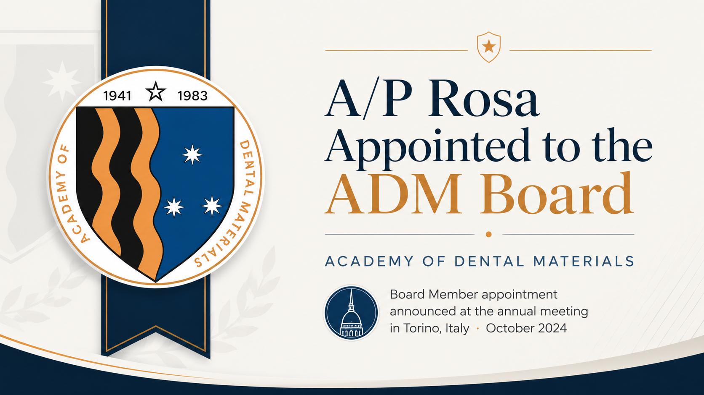

A/P Rosa appointed to the Board of Directors of the Academy of Dental Materials
The appointment places A/P Rosa at the heart of strategic decisions in one of the most influential international societies dedicated to dental materials science.

Associate Professor Vinicius Rosa has been appointed to the Board of Directors of the Academy of Dental Materials (ADM) during the society's annual meeting in Turin, Italy, in October 2024.
The Academy of Dental Materials is a leading international society dedicated to advancing the science of dental materials, fostering cross-border collaboration and clinical technology transfer. It also publishes Dental Materials, one of the field's most influential journals.
Board members guide the scientific and institutional direction of the Academy.
As a Board member, A/P Rosa helps set the Academy's global research priorities, coordinate the scientific committees of its international meetings, and support early-career scientists — placing NUS directly within the decisions that shape the future of biomaterials in dentistry.